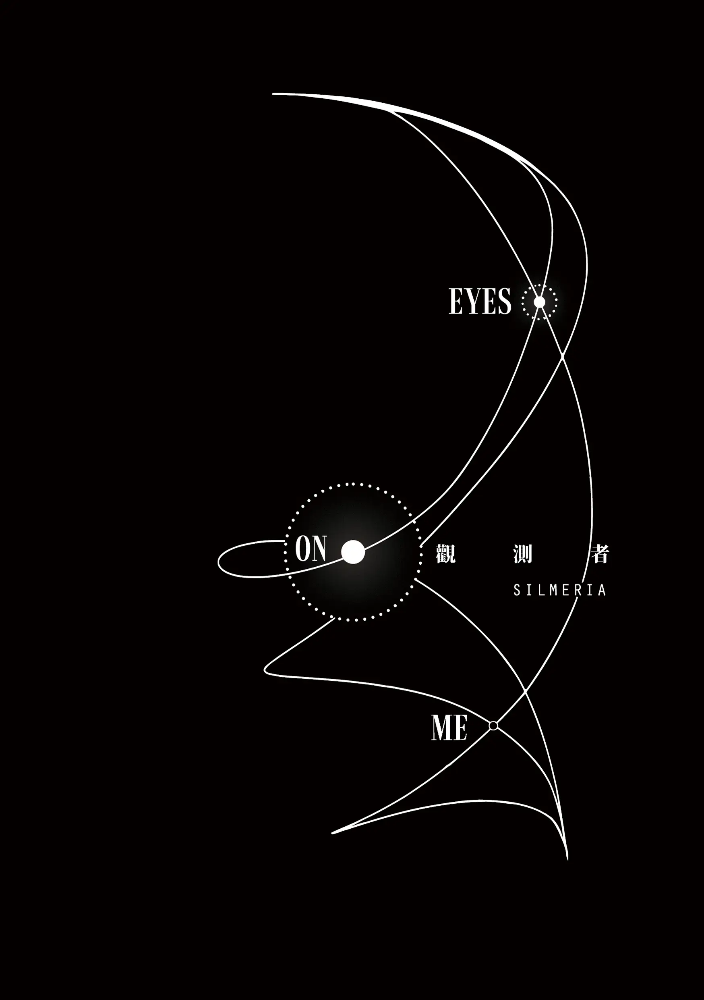

Across every fracture of fate, every silence between realms — I keep finding you. And you keep looking back.
About the novel
Eyes On Me (观测者) is an 80,000-word fan fiction set in the world of Ne Zha I & II, tracing the relationship between Nezha and Aobing through the quiet spaces the films leave unsaid.
The novel builds its cosmology on quantum physics — where observation shapes reality — and at its core is a meditation on free will: whether fate is written, chosen, or simply the sum of every moment two people decide to keep looking at each other.
The novel is accompanied by commissioned illustrations and exists as a physical printed book, first edition March 2026.
Nezha 哪吒
Ne Zha I & II · 哪吒之魔童降世 / 闹海
Born of flame and defiance. He burns because stillness never suited him — but for one person, he has always been willing to stop and be seen.
Aobing 敖丙
Ne Zha I & II · 哪吒之魔童降世 / 闹海
Forged in cold water and destiny. He carries the silence of the deep ocean — and within it, a gaze that has never fully looked away.
2025.08.22 · 2025.10.07
谨以此书，致敬那个我们未曾预知，
却共同抗达的结局。